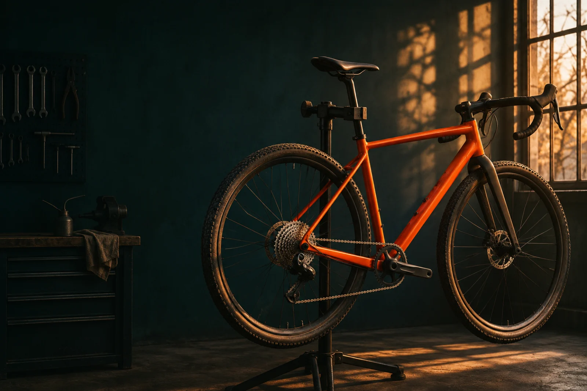

Independent bicycle workshop
Ride
smooth.
Tune-ups, repairs and wheel work for the bike you actually ride.
Explore repairsThe workshop
Find your fix.
- 01
Tune-ups
Get your shifting, braking and bearings running smoothly again.
- 02
Repairs
Find the cause of a rub, rattle or creak before replacing parts.
- 03
Wheel work
Wheel truing, puncture repair and tubeless setup.
An example of the next step
Bring your bike.
A shop can put its hours, address and preferred way to schedule service right here. Switchback is a fictional shop.
Ask LLHiggins about a website like this ↗